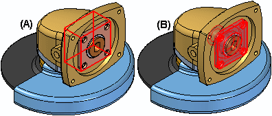
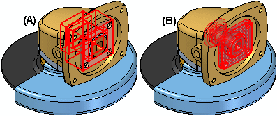

Assembly page (Solid Edge Options dialog box)
The Assembly page of the Solid Edge Options dialog box contains the user-configurable options specific to building and managing assemblies in the assembly environment. This option page can only be accessed when an assembly .asm document is open. See Open the Solid Edge Options dialog box.
- Component Placement Options
-
- Do not create new window when placing component
-
When checked and the placement part is dragged into the assembly from the Parts Library tab, the placement part is temporarily placed at the position where the mouse button was released. If the part is placed by double-clicking the part entry in the Parts Library tab, the part is temporarily placed in the assembly and the zoom level of the assembly window is automatically adjusted to see the new part and the assembly. Using either method, complete the positioning process by applying assembly relationships. For more information, see Assemble parts (workflow). This is checked by default.
When unchecked, a separate Place part window is displayed until at least one assembly relationship is defined. Then the part is shown in the assembly based on the first relationship.
Undo operations are managed differently depending on whether this option is checked or unchecked:
-
When checked, placing the part into the assembly and applying relationships are separate undo operations. This allows the assembly relationship to be individually undone without the part being removed from the assembly.
-
When unchecked, placing the part into the assembly and applying relationships are combined into a single undo operation. Clicking undo removes the part from the assembly.
-
- Maintain relationships when placing components
-
When checked, the relationships required to position the part in the assembly are preserved. This is checked by default.
When unchecked, the assembly relationships used to position a part are not preserved and a Ground relationship is placed after the part is positioned. Grounded parts do not update their positions in the assembly when other parts are modified. For more information, see About the Ground relationship.
- Use simplified models when placing parts in assembly
-
When checked, the simplified representation of a part is placed if the part has a simplified representation. Using simplified parts can improve performance by obscuring some complexity and design detail from the model. For more information, see Simplifying parts.
When unchecked, the designed version of the part is displayed in the assembly.
- Place as Adjustable when this assembly is placed into another assembly
-
When checked, this option specifies that placed subassemblies are considered to be adjustable assemblies so relationships can be placed to a part in the subassembly rather than the whole subassembly. The specific part in the subassembly that is being used to form a relationship must not be fully constrained. For more information, see Adjustable Assemblies.
- Place tubes in this assembly as adjustable when this assembly is placed into another assembly
-
When checked, this option specifies that tubes placed in the assembly are considered adjustable when the assembly is placed in another assembly. This simplifies the workflow of making tubes adjustable when placing assemblies containing tubes. For more information, see Adjustable tube design.
- Disperse this assembly when placing
-
When checked, the individual parts associated with the subassembly are automatically dispersed into the assembly. For more information, see Restructuring assemblies.
This option is typically used when placing a subassembly that contains a component that is part of a alternate components group. For more information, see Define Alternate Components command.
- Use formula for placement name
-
When checked, the PathFinder displays the document name and in parentheses the Placement Name if a placement name override exists.
When unchecked, the PathFinder displays only the Placement Name if a placement name override exists. For more information, see Occurrence Properties command and Rename command.
- Match click points on the parts when creating first assembly relationship (pre-ST8 behavior)
-
This option determines the part placement behavior when creating the first assembly relationship. When checked, the pre-ST8 relationship behavior is used. When applying the relationship, the placement part moves as much as practical to match the click point on the surface of the target part. As much as possible, the target part remains stationary. Due to this behavior, sometimes the placement part moves when it is not required. This often occurs in imported assemblies where the parts are mostly in place but do not have some relationships applied.
When unchecked, the placed part only moves the minimum amount to accomplish the relationship. Selecting this option can improve placement performance. This is the default setting.
This feature can also be set using the Assemble command bar Options dialog.
- Show dynamic movement of component during FlashFit
-
When checked, intermediate frames are shown between the start position and the resulting position when applying assembly relationships. The slider is used to adjust the number of intermediate frames to display. Slower transitions take more time and produce more frames while faster transitions produce fewer intermediate frames. This option allows the user to control the speed of the transition between the two orientations to accommodate slower and faster display configurations and to suit personal preferences. This option can also provide a better visual understanding of the relationship being applied. This is checked by default.
When unchecked, no intermediate frames are displayed and transition is immediate.
This assembly movement control is independent from the orientation view option set using the View page (Solid Edge Options dialog box, Assembly environment).
- Construction Display Options
-
Construction display options when placing components in an assembly:
- Show coordinate systems of component
-
When unchecked, coordinate systems are not displayed when placing components in an assembly.
When checked, the coordinate systems associated with a component being placed in an assembly are shown either during and after placement, or only during placement.
- Show reference planes of component
-
When unchecked, reference planes are not displayed when placing components in an assembly.
When checked, the reference planes associated with a component being placed in an assembly are shown either during and after placement, or only during placement.
- Show construction geometry when placing parts that do not have a design body
-
When checked, display the construction geometry for a part that does not have a design body. If there are construction surfaces in the part, show construction surfaces, if there are no construction surfaces then show construction curves, if there are no construction curves and surfaces then show sketches, and if none of the above, then show the co-ordinate system associated with the part (this will override the option to show/hide coordinate system). This is checked by default. For more information about parts without design bodies, see Non-graphic parts in assemblies.
- Fast Locate Options
-
- Fast locate using box display for parts
-
When checked, parts are displayed using a rectangular range box (A) instead of the graphic display elements of the geometry (B). Setting this option improves the display performance when highlighting and selecting components in an assembly. This setting should be considered option when working with large assemblies.

- Fast locate using box display for assemblies
-
When checked, subassemblies are displayed using a rectangular range box (A) instead of the graphic display elements of the geometry (B). Setting this option improves the display performance when highlighting and selecting components in an assembly. This setting should be considered option when working with large assemblies.

- Fast locate when over PathFinder
-
Specifies that when you pass the cursor over components in PathFinder, they do not highlight in the graphic window.
When you set this option, the name of the assembly component is still displayed in the message field, but it does not highlight in the graphic window. When you click the component in PathFinder, it is displayed in the graphic window using the Select color. Setting this option improves the performance when moving the cursor within PathFinder and can be useful when working with large assemblies.
When you clear this option, components are highlighted in the graphic window when you pass the cursor over them in PathFinder. This can slow the performance when moving the cursor within PathFinder, especially when working in large assemblies.
- Limited Update and Save
-
- Enable Limited Update command button
-
Controls the availability of the Limited Update command in the assembly environment. When checked, the Limited Update command is enabled and it can be selected from the toolbar. When unchecked, the Limited Update command is disabled and Limited Update is set to off.
- Enable Limited save command button
-
Controls the availability of the Limited Save command in the assembly environment. When checked, the Limited Save command is enabled and it can be selected from the toolbar. When unchecked, the Limited Save command is disabled and Limited Save is set to off.
- Dynamic Visualization
-
In-memory indexing of property information occurs simultaneously when you start Solid Edge. Use this option to delay property indexing.
- Enable delayed indexing when Solid Edge starts
-
When set, the in-memory indexing of property information is delayed until you click the Dynamic Visualization command. This option is recommended if you rarely use Dynamic Visualization.
Tip:Administrators can use the Solid Edge Administrator option, Enable delayed indexing in Dynamic Visualization to define this behavior.
- Miscellaneous Options
-
Locate elements in inactive parts
Historically, parts had to be activated to interact with the geometry of those parts. Geometry of inactive parts could not be located. When this option is checked, geometry of both active and inactive parts will be located. This is as if all parts are active. There can be situations where this is undesirable. If locating faces of inactive parts becomes too busy in your workflow and you want to limit the locate to only the active parts, disable the option.
Use default placement name during Replace PartWhen checked, the document name of the replacement occurrence is used when replacing a part or subassembly. This option is useful when the occurrence name within PathFinder has been changed using the Rename command or Occurrence Properties command on the PathFinder shortcut menu. When the name of an assembly occurrence is changed, only its occurrence name is changed. The document name is not changed.
When unchecked, the overridden name of the original occurrence is maintained.
- Auto scroll assembly Pathfinder
-
When checked, the assembly PathFinder scrolls to the component selected in the assembly window.
- Auto hide relationship Pathfinder
-
When checked, the relationship part (lower part) of the PathFinder is hidden until a component is selected.
- Dim surrounding components when a selection is made in relationship PathFinder
-
When checked, the graphic display of assembly relationships is enhanced by dimming the surrounding parts.
- Maintain assembly display states set when editing parts and subassemblies
-
When checked, any changes that occur to the assembly display settings while the user edits a Part or Sheet Metal document in place are maintained. This is checked by default.
This setting does not affect in-place subassembly processing as the assembly display state has always been preserved in this case.
- Patterned parts inherit parent part occurrence properties by default
-
When checked, patterned parts inherit the occurrence properties of the parent parts. For example, if the parent part has the occurrence property Display in Drawing Views set to Yes, the patterned parts would have the same occurrence property setting.
The occurrence properties can still be changed for individual parts in the pattern using the Occurrence Properties command.
- Inactivate hidden and unused components every XXX minutes
-
When checked, components that are hidden or have not been used in the allotted time will be automatically inactivated to reduce memory usage. When the Select Tool command is clicked after the time limit expires, the components are checked for usage and the time limit restarts.
For example, if the timer is set to 120 minutes, then work is performed in the assembly, the next time the Select Tool command is clicked after the time limit expires, any components that are hidden or have not been used are automatically inactivated. The symbols in PathFinder for the affected components also change to indicate the components are inactive. Any components which have been used for the following list of operations are ignored.
To preserve data integrity, certain operations that are performed in an assembly prevent parts from being automatically inactivated. For example, if any of the following operations occur on a component after the time limit starts, the component will remain active when the current time limit expires:
-
Activate a component
-
Apply a relationship using the component.
-
Select the component using the measurement commands on the Inspect menu.
-
Define an associative link using the component.
-
In-place activate a part without saving it.
This option is useful when working with large assemblies. For more information, see Working with Large Assemblies Efficiently.
-
- *These options are disabled when using Large Assembly Performance mode.
-
All options in the dialog that have * after the text are disabled in Large Assembly Performance mode.
How do I
Open the Solid Edge Options dialog boxLearn more
File locationsLook up more details
General tab (Solid Edge Options dialog box, Draft environment)View page (Solid Edge Options dialog box, Draft environment)
Save page (Solid Edge Options dialog box)
File Locations page (Solid Edge Options dialog box)
Manage tab, Solid Edge Options dialog box
User Profile page (Solid Edge Options dialog box)
Manage page (Solid Edge Options dialog box)
Dimension Style page (Solid Edge Options dialog box)
Drawing View Style tab (Solid Edge Options dialog box)
Generative Design tab (Solid Edge Options dialog box)
Drawing View Wizard tab (Solid Edge Options dialog box)
Helpers tab (Solid Edge Options dialog box)
Attachment Units page (Solid Edge Options dialog box, Draft)
Edge Display tab (Solid Edge Options dialog box)
Drawing Standards tab (Solid Edge Options dialog box)
Annotation tab (Solid Edge Options dialog box)
General page (Solid Edge Options dialog box, Part environment)
General page (Solid Edge Options dialog box, Profile environment)
Colors tab (Solid Edge Options dialog box)
Colors tab (Solid Edge Options dialog box, Draft)
View page (Solid Edge Options dialog box, Part environment)
Inter-Part page (Solid Edge Options dialog box)
Simulation tab (Solid Edge Options dialog box)
Thermal Load Options dialog box
General page (Solid Edge Options dialog box, Assembly environment)
Units page (Solid Edge Options dialog box)
View page (Solid Edge Options dialog box, Assembly environment)
Assembly Open As page (Solid Edge Options dialog box, Assembly environment)
Shape Search page (Solid Edge Options dialog box)
Requirements page (Solid Edge Options dialog box)
Electrical Routing page (Solid Edge Options dialog box)
Tube Properties page (Solid Edge Options dialog box)
Flat Pattern Treatments page (Solid Edge Options dialog box)